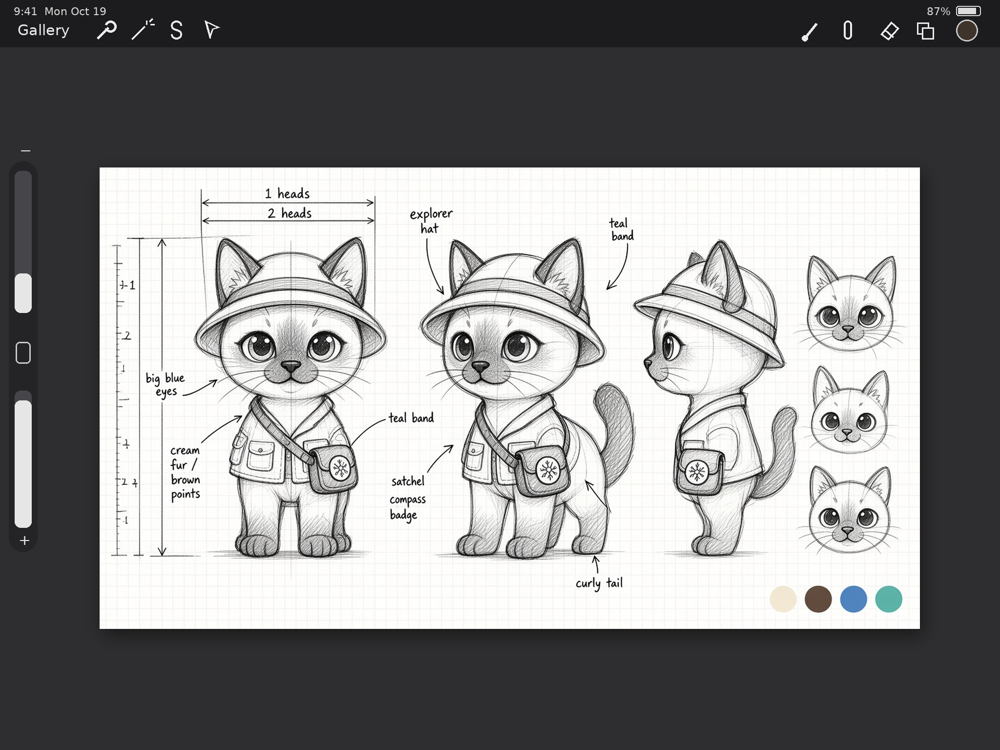
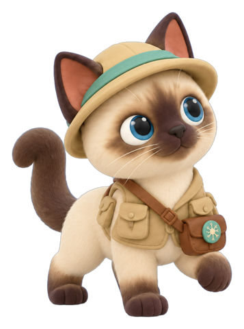
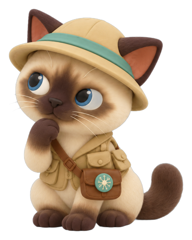
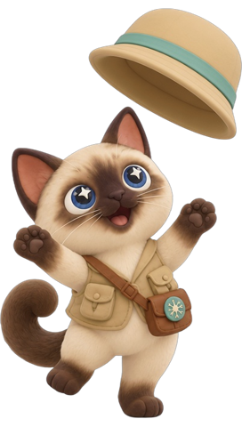

About this project the educator view · the kid-facing guide with Dingo starts below

Project overview
In this project I designed a small palette game for K-12 kids to help them understand what K-means clustering is. Instead of starting with math, I start with pictures: world-famous artworks and classic film frames. Right now the whole game is set inside one film, the hand-colored version of A Trip to the Moon (1902) by Georges Méliès.
I chose this because kids respond to things that are visual and artistic. So I ask them to build a color palette from a film frame. The computer sorts every pixel into k color groups (that’s K-means), and the kids can compare its palette with the colors they would pick themselves.
Dingo, my Siamese-cat guide, is the in-game guide. He walks kids through the whole page step by step, from the hello at the top to the cheer at the end, and tells them what to do at each step.
How it works
The first pass is K-means: each pixel has to pick exactly one group, and you get a simple palette with the share of the picture each color covers. The second pass is a Gaussian mixture model, fitted with the EM algorithm. It is allowed to hedge (“this spot is 70% red, 30% orange”), so you can see where the machine is unsure.
Challenges & how I solved them
My first try in RGB gave muddy colors, so I moved to Lab color space, which is closer to how we see. Clustering every pixel was too slow for a live slider, so now I sample about 6,000 pixels. And I really wanted to show the machine’s doubt, so I added the soft-clustering view with the uncertainty map.


The palette game drag the handle to wipe · tap the picture to inspect a pixel
Left: the original frame. Right: every pixel repainted with its K-means group color.

The palette wheel
The outer ring is the K-means palette: each slice is one color group, sized by how much of the frame it covers. Inside, each dot is a sampled pixel, placed by its hue (angle) and colorfulness (distance from the center). Dots near the middle are greys and browns.
The palette K-means, hard clusters · % = share of the picture
K-means groups vs. GMM uncertainty drag to compare: sure vs. unsure
In the uncertainty map, brighter = the Gaussian mixture is less sure which group a pixel belongs to.
K-means makes every pixel pick exactly one color, but the Gaussian mixture (fitted with EM) gives probabilities instead, so a spot can be 70% red and 30% orange. These groups aren’t the same as the colors people notice: big dark areas can take up several slots, while a small bright detail gets merged away. That fuzziness is what I like most, because it lets kids ask who should decide the colors on the border: the machine, the artist, or them.
